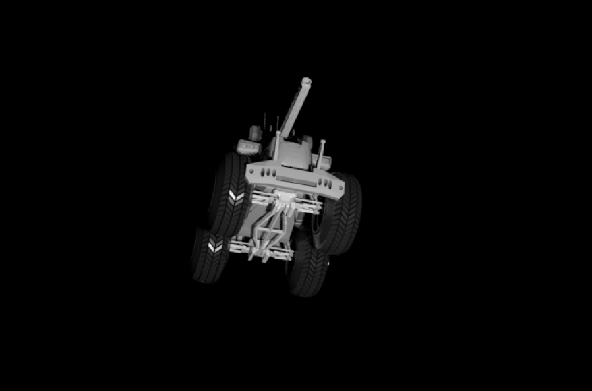
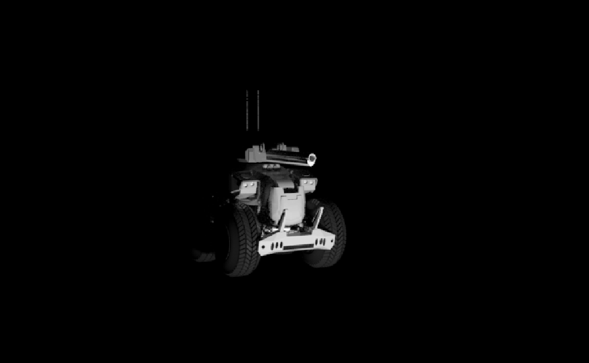
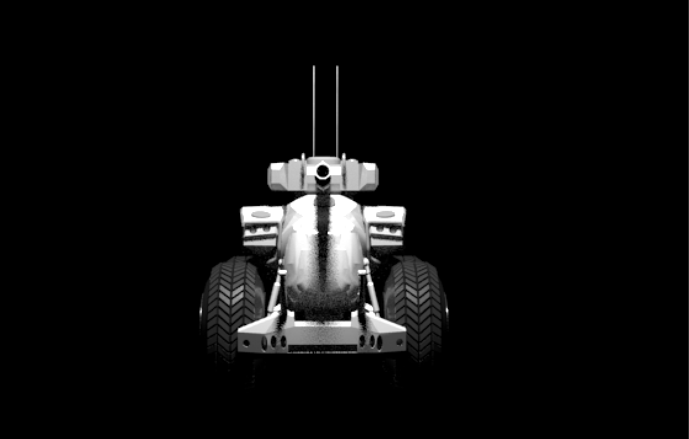

"Centaur"
8.1.20
Growing up I was fortunate enough to be able to get a gaming console with the game known as "Gears Of War" a game based on trying to save the semi destoryed world from underground humanoids, This is a vehicle that was shown in one of their games and I was always a huge fan of their 3D models so I wanted to recreate their infamous death machine called the "Centaur"